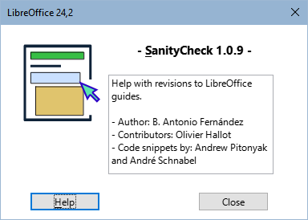

Macros to unify the format and styles of LibreOffice guides v.2X.z
Copyright
This document is copyright © 2024 by the LibreOffice Documentation Team. Contributors are listed below. It may be distributed and modified under the terms of the GNU General Public License version 3 or later or the Creative Commons Attribution License,version 4.0 or later.
All trademarks mentioned in this guide belong to their rightful owners.
|
Author |
Contributors |
|
B.Antonio Fernández |
Olivier Hallot |
Sources
The macros that make up the extension described here are the result of consulting different sources which I name in general terms since it is impossible for me to go into detail. These are:
-
The documentation of the Basic language of the different StarOffice derivatives.
-
The books: Aprendiendo OooBasic by Mauricio Baeza, OpenOffice.org Macros Explained by Andrew Pitonyak and Programmation OpenOffice.org by Bernard Marcelly.
-
Consultations to the OpenOffice and LibreOffice forums and the study of other macros in the extensions for LibreOffice.
Introduction
SanityCheck is a macro library for Writer that is intended to help unify the formatting and styles of LibreOffice chapters and guides.
Although some tasks can be performed with Writer's own tools, macros attempt to centralize options that are specific to the chapter format and automate some processes that can be tedious and time-consuming.
As a safety rule, work on a copy of the file you are going to review and save your work progressively.
Use macros preferably in chapters, before assembling the guide, as it will be easier to correct formatting errors and will reduce macro execution time.
Installation and features
Macros are packaged as an extension and are installed like any other extension, from the extension manager. If you encounter problems updating or installing a new version, uninstall the old version and install the new version.
-
The macros are written in LO Basic so they should be compatible with any operating system without the need to install any dependencies.
-
The extension adds a toolbar (Figure 1) as well as a menu named LO SanityCheck and the tools also appear integrated into the In Tabs user interface.
Figure 1: SanityCheck toolbar
-
The macros are available in English, Spanish and Portuguese, with the possibility of adding other languages by adding translations to the L10n module.
-
The extension incorporate templates with the guides' own styles (also in the three languages to enable spelling correction):
-
Chapter template (for individual chapters).
-
Master Document template (to create a master document and assemble the complete guide or to link it with a complete guide in odt format).
-
Back cover template (to attach to the end of the complete guide).
-
Each dialog contains a built-in help page that provides information on the tool's function, and after running the macros a summary of the changes log is displayed.
Included Macros
-
Availability of macros
Macros are designed for the specific format of guides and specifically for use with guide
chapters.
While some macros can be used in a master document or an entire guide, you will find that
several macros are disabled for security reasons. They are also very limited for other non-guide documents.
Toggle highlights
Macro available for all types of documents.
Link template
Macro available for all types of documents.
Link the document with the supplied template that contains the documentation's own styles.
-
This is the recommended way to transfer new styles to old documents.
-
If the document does not contain the required styles, some macros will not work.
Figure 2: Link template dialog box
-
Notes
— The master document template can be associated with complete guides in both ODM (master
document) and ODT formats. This template contains the same styles as the chapter template but differs in the
heading levels presented in the index.
—
In other documents only the chapter template can be applied.
Document fields
This macro is only available for chapters or full guides.
Figure 3: Document fields dialog box
-
Notes
— The Chapter X and Title fields are disabled in full guides.
— The Contributor and
Editor fields, introduced as of version 24, are automatically filled in
Rename Objects
This macro is only available for guide chapters.
Figure 4: Rename objects dialog box
-
Note
In the new version of the chapters, the COPYRIGHT section must be included within the
DISPLAYAREA section.
- When renaming sections the SEC_COPYRIGHT section is automatically moved to the
beginning of SEC_DISPLAYAREA
Check styles
Macro available for all types of documents.
-
The macro check that the styles used in the chapters follow the template standards to avoid styles alien to the guides (generally styles from previous templates).
-
The macro go through the document and mark the paragraphs with a style foreign to the documentation with a comment and highlight the foreign character styles with a black background and yellow font.
-
The macro replaces the paragraph styles prior to the version 24 guides with their corresponding updated ones, some with incorrect names (transition to the new template) and the MenuPath character style with Strong Emphasis (remnants of old versions).
-
The macro allows the elimination of alien styles when they are not applied to the document.
Figure 5: Style Check dialog box
-
Note
Macros can't do everything. The reviewer's job is to replace the styles outside the template with the correct ones and eliminate them from the document
Direct Format Cleanup
This macro is only available for guide chapters.
Figure 6: Format Cleaning dialog box
-
Text: Clean up direct formatting applied to text fragments or strings. When you run it, the numbering of the ordered lists becomes consecutive throughout the document, so it is advisable to also mark the cleanup of Numbered paragraphs.
-
Paragraphs: Eliminates direct formatting, including bullets or numbering, applied to normal paragraphs and also cleans up direct formatting of unordered lists.
-
Numbered Paragraphs: In this case, the macro removes the direct formatting applied to ordered lists and resets the numbering whenever possible, adding a comment to paragraphs where the numbering may need to be reset.
-
Note
For the macro to correctly reset numbering, every list must be preceded by the Body Text, List Intro paragraph style. In many cases the style before the lists
is Body text.
The macro changes the style of preceding paragraphs to
Body Text, List Intro.
Review of tables
Macro available for all types of documents
Figure 7: Tables Review dialog box
Figures adjust
This macro is only available for guide chapters.
Figure 8: Images Review Log dialog box
This macro has no initial dialog, it runs with the optimal settings for the frames and images. From the log dialog (Figure 8) you can access the Browse Images macro.
-
The macro applies the appropriate anchor and formatting to images, the frames that contain them, and the captions.
-
The macro gets the caption text to apply to the frame and image description.
-
The macro insert comments in:
- Images whose aspect ratio is disproportionate.
- Images that have been cropped with Writer.
- Poorly formed captions (possible errors in the modification of an already inserted caption).
Browse Images
Macro available for all types of documents
Figure 9: Images Review dialog box
Info
Figure 10: Info dialog box

Limitations, known issues and tips
Templates
Macros for checking styles and cleaning up direct formatting are based directly on the styles of the supplied templates.
For macros to work correctly, chapters must have the appropriate template applied.
Templates are provided for the English, Spanish and Portuguese languages, but only the templates corresponding to the interface language will be seen.
Macros determine the document type based on the file name and select the appropriate template to apply to chapters or full guides (both in odm and odt formats). In other documents, only the chapter template can be linked.
Styles
Problems with Style Names:
Solution:
Problem with character styles:
Solution:
Issues with list styles:
Solution
Cleaning direct formatting of Paragraphs
The macro cannot distinguish what type of direct formatting has been applied to a paragraph, so it eliminates all direct formatting: indentation, numbering, spacing, etc.
Advice:
Cleaning direct format of Numbers (ordered lists)
The numbering sequence in ordered lists may be interrupted by images, notices, notes or suggestions.
When clearing the format, the numbering sequence is lost and the numbering becomes continuous. The macros try to reset the numbering but it is not easy to distinguish where to reset them. Although the macro warns of points where it could be restarted, The macro is not infallible.
Advice:
Tables
Custom table styles do not apply or function like paragraph or character styles, so even if you apply the LO User Guides style, you will most likely need to adjust the table for page splitting, if necessary and apply more appropriate formatting using Writer's Table Properties dialog.
Frames
When figures are adjusted, the frames automatically adapt to the largest width of the text or image. In some cases, the frames fit the full width of the text on the page.
Problem:
Solution:
-
Create a new document using the supplied template.
-
Select all the text in the affected document and copy it over the new document.
-
Work on the new document.
Images
In some cases, the macro inserts a comment on images that is not understandable.
Problem:
Solution:
Captions of the figures
In some cases the macro inserts a poorly formed caption comment that is not understandable.
Problem:
Solution:
Problem:
Solution:
-
Reconstruct the figure by copying just the image and pasting it into another paragraph (be sure to copy only the image).
-
Insert a new caption.
About the translation
If you have read this far, you will have seen many vocabulary and grammatical errors.
This document is translated from Spanish with Google (some corrections made by me).
I'm sorry my English is so bad but I hope this document was understandable.